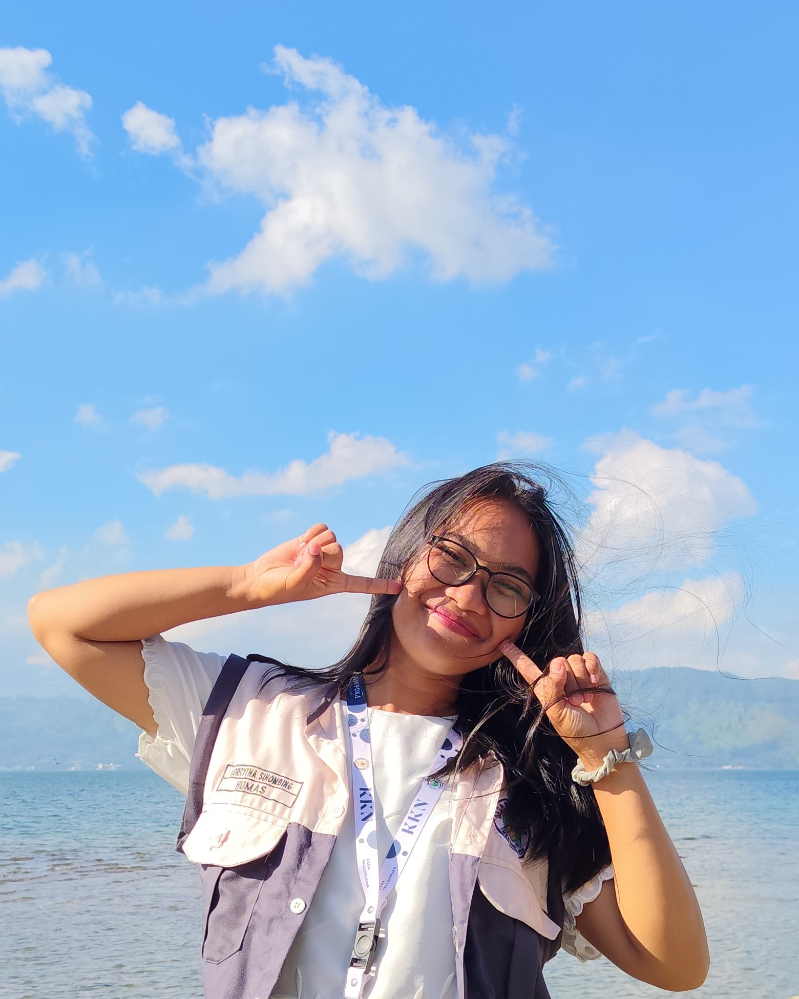
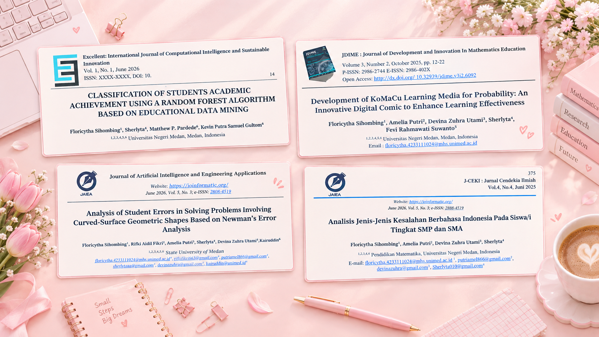
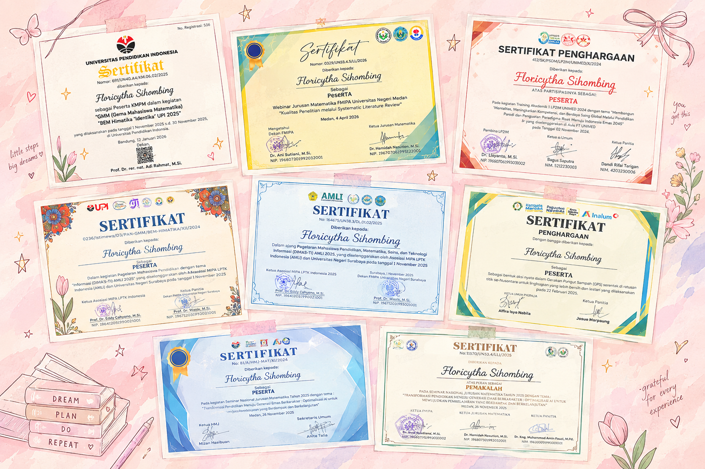
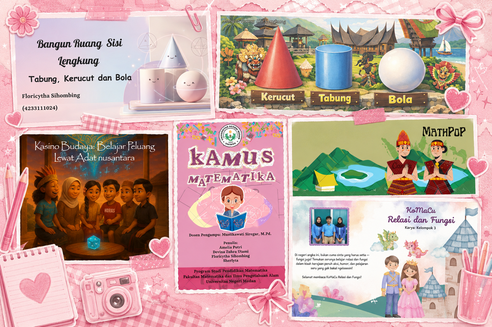
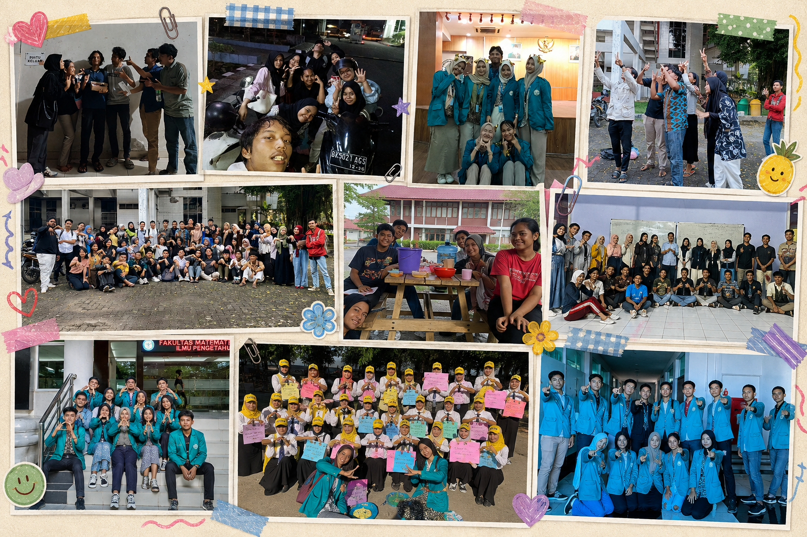
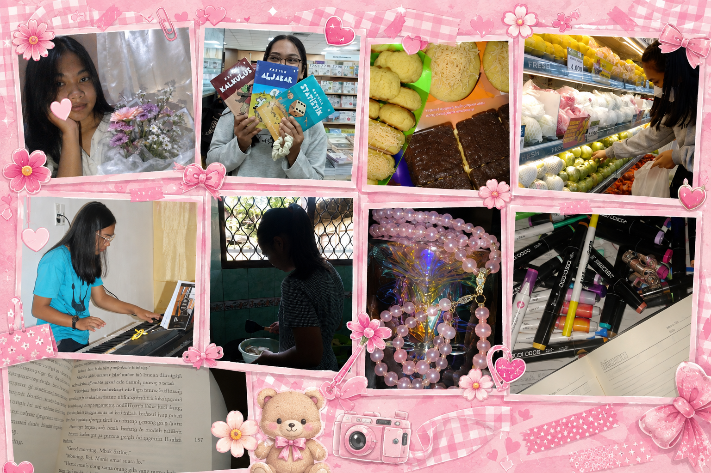

Hi! Saya Floricytha, akrab disapa Flori,mahasiswi Pendidikan Matematika di Universitas Negeri Medan. Senang bisa berbagi sedikit cerita tentang perjalanan, pengalaman, dan karya saya selama menjalani perkuliahan. Selamat datang dan semoga teman-teman menikmati perjalanan kecil ini! 🌷

Floricytha, yang akrab dipanggil Flori,suka mencoba hal-hal baru dan menikmati hal-hal kecil dalam kesehariannya. Bagi Flori, setiap hari selalu punya cerita kecil yang bisa dikenang dan setiap pengalaman selalu punya sesuatu untuk dipelajari
Selama kuliah, saya banyak belajar melalui berbagai tugas, proyek, penelitian, dan pengalaman. Mulai dari membuat media pembelajaran, mengeksplorasi teknologi digital dan AI, mengembangkan LMS, hingga mengerjakan penelitian. Setiap proyek menjadi kesempatan bagi saya untuk belajar, bereksperimen, dan menemukan ide-ide baru.
Saya ingin terus tumbuh di dunia pendidikan dan penelitian, khususnya dalam mengeksplorasi bagaimana media pembelajaran dapat dirancang agar lebih menyenangkan, interaktif, dan bermakna. Saya ingin terus bertanya, mencoba, meneliti, dan menciptakan sesuatu yang bukan hanya menarik untuk dilihat, tetapi juga memberikan pengalaman belajar yang berarti.
2010 — 2011
Perjalanan pendidikan saya dimulai dari rasa ingin tahu yang sederhana, bermain sambil belajar, hingga berani mengikuti lomba cerdas cermat untuk pertama kalinya.
2011 — 2016
Enam tahun di sekolah dasar menjadi masa ketika saya mulai berani mencoba berbagai hal, termasuk mengikuti lomba atletik dan Olimpiade Matematika yang memperkenalkan saya pada pengalaman berkompetisi sejak dini.
2017 — 2020
Di masa SMP, saya semakin tertarik mengeksplorasi kemampuan di berbagai bidang melalui kelas unggulan dan mengikuti Science Competition Expo (SCE) 2018, serta berhasil masuk 30 besar bidang IPS tingkat SMP se-Sumatera Utara.
2020 — 2023
Masa SMA membawa saya pada pengalaman yang lebih beragam melalui keterlibatan dalam OSIS, kegiatan rohani di gereja, serta ekstrakurikuler Mading yang memberi ruang bagi saya untuk mengembangkan minat dalam menulis dan menggambar.
Ideas into Creation
Saya tertarik mengeksplorasi teknologi pendidikan karena saya senang mengubah ide menjadi sesuatu yang interaktif, terutama melalui media pembelajaran dan animasi matematika yang menjadi bagian dari berbagai karya digital saya.
Stories I Keep
Saya suka membaca novel, terutama genre romance, dan menuliskan cerita-cerita kecil dalam journaling karena keduanya menjadi ruang bagi saya untuk menikmati cerita, menuangkan perasaan, sekaligus mengabadikan momen; beberapa halaman journaling dan koleksi bacaan menjadi bagian kecil dari karya yang saya simpan.
Things I Make
Saya senang membuat sesuatu dengan tangan karena prosesnya terasa menyenangkan dan memberi kepuasan tersendiri, mulai dari menjahit dan membuat pouch hingga organizer box serta berbagai kerajinan kecil yang bisa digunakan maupun dipajang.
My Way to Unwind
Saya biasanya bermain piano dan membuat brownies, cookies, atau berbagai kreasi pastry ketika sedang suntuk karena dua kegiatan ini menjadi cara saya untuk healing dan mengembalikan mood, dengan menikmati alunan nada dan setiap tahapan baking saya bisa menguntai beberapa benang kusut di pikiran saya.
Selama perkuliahan, saya telah terlibat dalam berbagai penelitian dan publikasi bersama teman-teman, yang sudah dipublikasi antara tahun 2024-2026 dengan topik yang mencakup Educational Data Mining, Newman’s Error Analysis, Linear Programming, Digital Learning Media, dan Indonesian Language Analysis. Pengalaman ini memperkenalkan saya pada proses penelitian, analisis, penulisan ilmiah, hingga publikasi.
Untuk memperluas wawasan dan pengalaman belajar di luar perkuliahan, saya mengikuti berbagai kegiatan akademik. Pada tahun 2025, saya berpartisipasi dalam AMLI (Asosiasi MIPA LPTK Indonesia) serta KMPM/GMM BEM Himatika “Identika” UPI. Sebelumnya, pada tahun 2024, saya mengikuti LKTIN/GMM BEM Himatika “Identika” UPI dan Training Akademik I LP2IM UNIMED.
Saya juga memiliki pengalaman dalam berbagi pengetahuan dan menyampaikan hasil karya melalui kegiatan akademik. Pada tahun 2025, saya berkesempatan menjadi pemakalah dalam Seminar Nasional Jurusan Matematika UNIMED, sedangkan pada tahun 2024 saya menjadi pemateri dalam Mathematics Study Club HMJ Matematika UNIMED.
Selain penelitian, saya mengembangkan berbagai proyek akademik yang berfokus pada pembelajaran dan media matematika. Beberapa di antaranya adalah KoMaChu (Komik Matematika Lucu), Pop-Up Book Relasi dan Fungsi, Kamus Istilah Matematika, LMS Bangun Ruang Sisi Lengkung, media pembelajaran yang mengakomodasi profil belajar, serta media Google Sites Bangun Ruang berbasis RME. Berbagai proyek tersebut menjadi ruang bagi saya untuk mengeksplorasi kreativitas sekaligus menerapkan teknologi dalam pembelajaran matematika.
Di luar kegiatan akademik, saya juga terlibat dalam kepanitiaan yang memberikan pengalaman dalam bekerja sama, berkomunikasi, dan bertanggung jawab dalam sebuah kegiatan. Pada tahun 2025, saya menjadi bagian dari Divisi Konsumsi dalam Matematika Fair, sedangkan pada tahun 2024 saya bertugas di Divisi Perlengkapan dalam kegiatan PKKMB Jurusan Matematika.
Saya juga mengikuti kegiatan yang memberikan kesempatan untuk berinteraksi dan berkontribusi di lingkungan sekitar. Pada tahun 2026, saya mengikuti Webinar Jurusan Matematika FMIPA UNIMED, sementara pada tahun 2025 saya terlibat sebagai volunteer dalam kegiatan Gerakan Pungut Sampah yang diselenggarakan oleh Karya Salemba Empat UNIMED.
“Tidak perlu selalu tahu sejauh apa perjalanan ini akan membawa kita. Cukup percaya, terus belajar, dan jangan berhenti mencoba. Selalu katakan ‘ya’ pada setiap kesempatan, karena mungkin dari sanalah kita akan sampai pada bagian cerita yang paling indah.”

Research & PublicationsBeberapa penelitian yang telah dipublikasikan: Juni 2026—Classification of Students Academic Achievement Using a Random Forest Algorithm Based on Educational Data Mining Juni 2026—Analysis of Student Errors in Solving Problems Involving Curved-Surface Geometric Shapes Based on Newman’s Error Analysis November 2025—Optimasi Keuntungan UMKM Roti dan Donat Jln. Tuasan Menggunakan Program Linear Metode Simpleks—Prosiding Seminar Jurusan Matematika Oktober 2025—Development of KoMaCu Learning Media for Probability: An Innovative Digital Comic to Enhance Learning Effectiveness Juni 2025—Analisis Jenis-Jenis Kesalahan Berbahasa Indonesia pada Siswa/i Tingkat SMP dan SMA

Academic ActivitiesBerbagai kegiatan akademik yang saya ikuti untuk menambah wawasan, pengalaman, dan kesempatan belajar di luar perkuliahan: 2025—Peserta AMLI (Asosiasi MIPA LPTK Indonesia) 2025—Peserta KMPM / GMM BEM Himatika “Identika” UPI 2024—Peserta LKTIN — GMM BEM Himatika “Identika” UPI 2024—Peserta Training Akademik I LP2IM UNIMED Pengalaman saya dalam berbagi pengetahuan dan menyampaikan hasil karya kepada orang lain: 2025—Pemakalah Seminar Nasional Jurusan Matematika UNIMED 2024—Pemateri Mathematics Study Club HMJ Matematika UNIMED

Academic ProjectsBerbagai proyek yang saya kerjakan selama perkuliahan, khususnya dalam pengembangan media dan pembelajaran matematika: KoMaChu (Komik Matematika Lucu) Pop-Up Book Relasi dan Fungsi Kamus Istilah Matematika LMS Bangun Ruang Sisi Lengkung Media Pembelajaran yang Mengakomodasi Profil Belajar Media Google Sites Bangun Ruang Berbasis RME

Committee ActivitiesPengalaman saya dalam bekerja sama dan berkontribusi dalam pelaksanaan berbagai kegiatan mahasiswa: 2025— Divisi Konsumsi, Matematika Fair 2024—Divisi Perlengkapan, PKKMB Jurusan Matematika Berbagai kegiatan yang memberikan saya kesempatan untuk berinteraksi, berkontribusi, dan mendapatkan pengalaman di luar kegiatan akademik 2026—Peserta Webinar Jurusan Matematika FMIPA UNIMED 2025—Volunteer Gerakan Pungut Sampah, Karya Salemba Empat UNIMED

My InterestsSaya senang mengisi waktu dengan berbagai kegiatan yang saya sukai, seperti membaca novel dan journaling untuk menikmati cerita serta mengabadikan momen, bermain piano dan baking sebagai cara untuk melepas penat, membuat berbagai kerajinan tangan sebagai ruang untuk berkreasi, serta mengeksplorasi teknologi pendidikan melalui pembuatan media dan animasi pembelajaran matematika. Bagi saya, setiap hobi menjadi cara untuk belajar, berkreasi, dan menikmati proses di luar kesibukan perkuliahan. 🌷✨